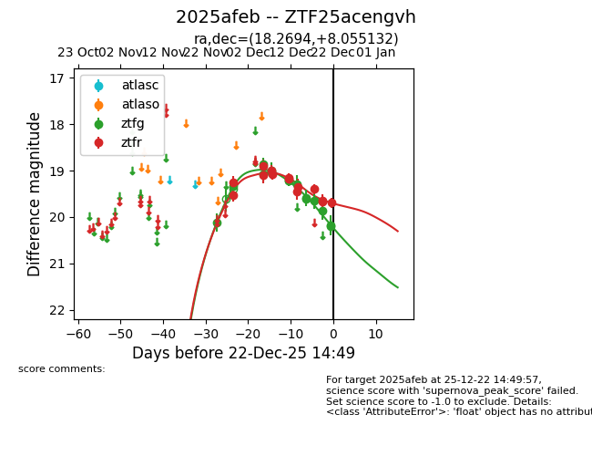
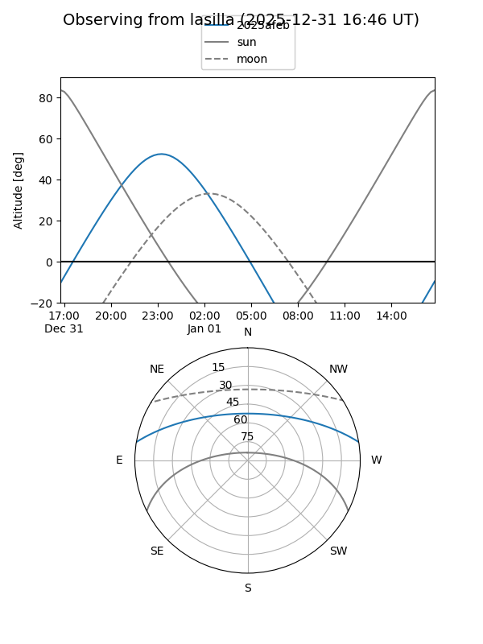
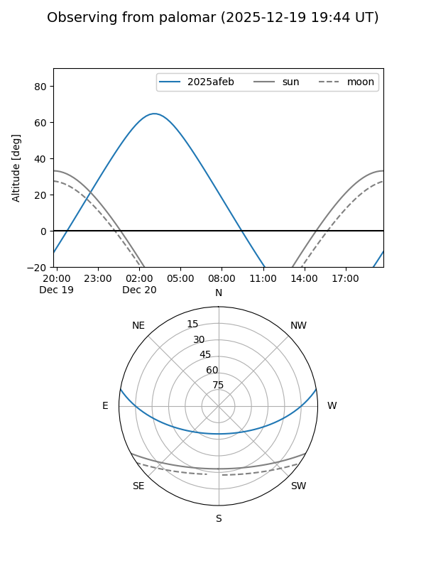
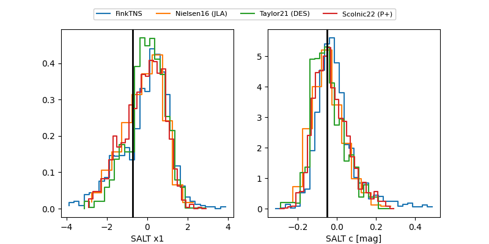

2025afeb
Target 2025afeb at 2025-12-22 14:16
Aliases and brokers:
FINK: fink-portal.org/ZTF25acengvh
Lasair: lasair-ztf.lsst.ac.uk/objects/ZTF25acengvh
ALeRCE: alerce.online/object/ZTF25acengvh
TNS: wis-tns.org/object/2025afeb
YSE: ziggy.ucolick.org/yse/transient_detail/2025afeb
alt names
ZTF25acengvh (ztf,fink_ztf)
2025afeb (tns,yse)
Coordinates:
equatorial (ra, dec) = 18.2694,+8.05513
equatorial (HMS+DMS) = 01:13:04.67,+08:03:18.47
galactic (l, b) = (132.1663,-54.42816)
Flags:
Photometry:
last ztfg=20.20, ztfr=19.66
14 ztfg, 13 ztfr detections
Lightcurve

Visibility


Additional plots
